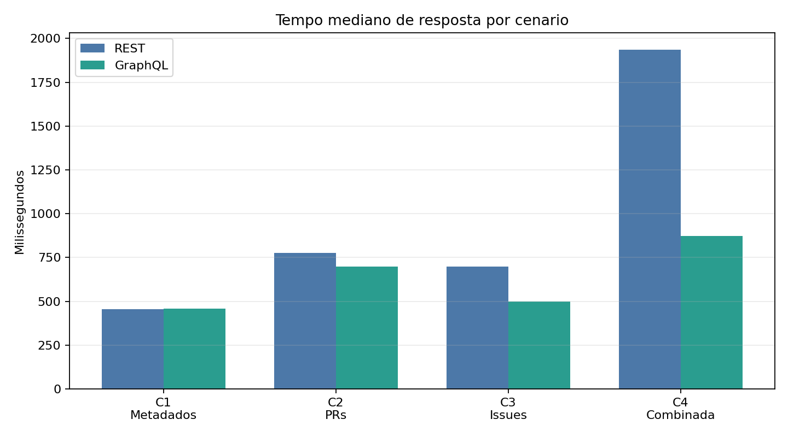
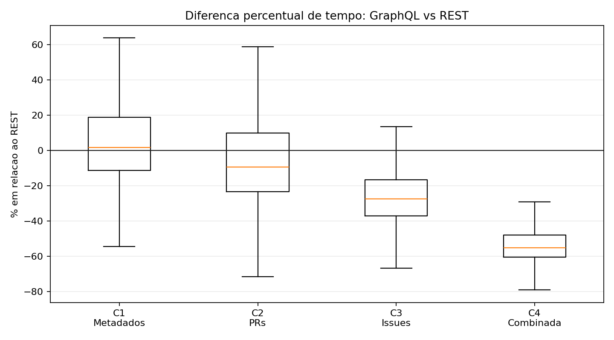
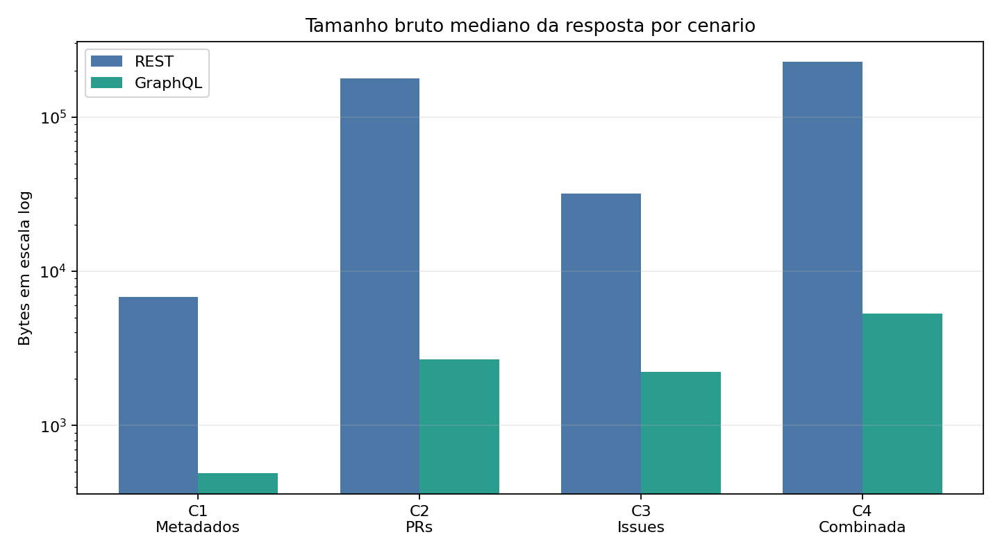
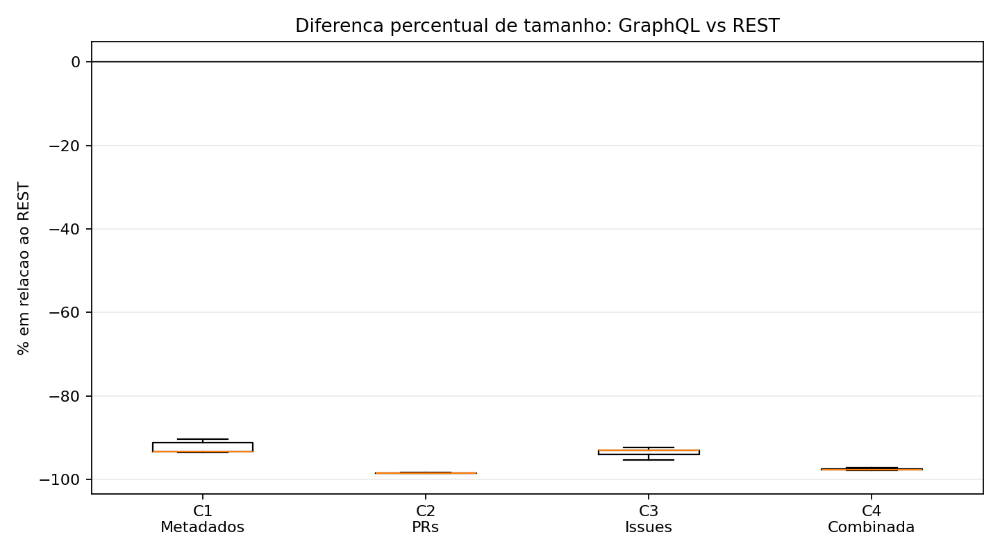

APIs Web sao uma parte essencial da integracao entre sistemas de software. Historicamente, muitas APIs foram construidas com base no estilo REST, em que clientes acessam recursos por endpoints predefinidos. GraphQL surge como uma alternativa em que o cliente declara explicitamente os campos desejados, permitindo recuperar dados relacionados em uma unica consulta e reduzir o retorno de informacoes nao utilizadas.
Neste laboratorio, o foco esta na comparacao experimental entre REST e GraphQL em um contexto controlado. A API do GitHub foi usada como objeto experimental porque oferece as duas interfaces sobre entidades equivalentes, como repositorios, Pull Requests e issues.
O experimento mede o custo percebido pelo cliente, incluindo rede, latencia, serializacao, processamento da API e transferencia da resposta. Portanto, os tempos obtidos nao representam apenas processamento interno do servidor. Alem disso, os resultados se limitam ao contexto da API do GitHub e aos 100 repositorios Python mais populares no momento da coleta.
Outra restricao e que GraphQL foi configurado para retornar apenas os campos necessarios ao experimento, enquanto REST retorna os campos padrao de cada endpoint. Essa diferenca faz parte da comparacao pratica entre as abordagens, mas deve ser considerada ao interpretar a reducao de tamanho das respostas.
O problema foco e avaliar, de forma quantitativa, se consultas GraphQL apresentam beneficios mensuraveis em relacao a consultas REST equivalentes. O estudo observa duas dimensoes: tempo de resposta e tamanho bruto da resposta retornada pela API.
| RQ | Pergunta de pesquisa |
|---|---|
| RQ1 | Respostas as consultas GraphQL sao mais rapidas que respostas as consultas REST? |
| RQ2 | Respostas as consultas GraphQL tem tamanho menor que respostas as consultas REST? |
| RQ | Hipotese nula | Hipotese alternativa |
|---|---|---|
| RQ1 | Nao ha diferenca significativa entre o tempo de resposta de GraphQL e REST. | Ha diferenca significativa entre o tempo de resposta de GraphQL e REST. |
| RQ2 | Nao ha diferenca significativa entre o tamanho das respostas GraphQL e REST. | Ha diferenca significativa entre o tamanho das respostas GraphQL e REST. |
O objetivo principal deste experimento e comparar quantitativamente as respostas de consultas REST e GraphQL na API do GitHub, verificando diferencas em tempo de resposta e tamanho bruto da resposta para cenarios equivalentes.
| Objetivo | Descricao |
|---|---|
| OE01 | Selecionar os 100 repositorios Python mais populares do GitHub. |
| OE02 | Executar cenarios equivalentes usando REST e GraphQL. |
| OE03 | Medir tempo de resposta e tamanho bruto da resposta. |
| OE04 | Aplicar analise pareada e teste de Wilcoxon. |
| OE05 | Interpretar os resultados em relacao as RQs do laboratorio. |
A metodologia foi organizada como um experimento controlado, quantitativo e pareado. Cada unidade experimental corresponde a uma execucao de um cenario para um repositorio especifico, em uma rodada especifica, usando REST ou GraphQL. As comparacoes foram feitas entre pares equivalentes.
| Etapa | Descricao |
|---|---|
| 1 | Coleta da lista dos 100 repositorios Python mais populares. |
| 2 | Execucao dos cenarios C1, C2, C3 e C4 em REST e GraphQL. |
| 3 | Registro das medicoes brutas em CSV com checkpoint e retry. |
| 4 | Formacao de pares validos REST/GraphQL por repositorio, cenario e rodada. |
| 5 | Calculo de medianas, deltas e teste pareado de Wilcoxon. |
| 6 | Geracao de graficos, dashboard e relatorio final. |
| Decisao | Justificativa |
|---|---|
| API do GitHub | Disponibiliza interfaces REST e GraphQL maduras sobre objetos equivalentes. |
| Repositorios Python populares | Delimita a amostra e reduz variacao entre linguagens. |
| 30 repeticoes | Permite observar variabilidade de rede e estabilizar medianas. |
| Analise pareada | Compara REST e GraphQL para o mesmo repositorio, cenario e rodada. |
| Tamanho bruto | Representa o custo direto de transferencia percebido pelo cliente. |
Foram utilizados dados publicos da API do GitHub, scripts Python desenvolvidos para a coleta, arquivos CSV de saida, graficos em PNG e tabelas de estatisticas descritivas e testes estatisticos. A amostra contem 100 repositorios Python populares. A coleta completa gerou 24.000 medicoes brutas e 11.998 pares validos.
| API | Cenario | Status | Erro | Quantidade |
|---|---|---|---|---|
| GraphQL | C1 | 401 | HTTP 401 | 1 |
| GraphQL | C3 | 0 | URLError | 1 |
| REST | C3 | 0 | URLError | 1 |
Foram calculadas estatisticas descritivas, como media e mediana, para tempo de resposta e tamanho bruto. Como as medicoes sao pareadas, foi aplicado o teste de Wilcoxon para comparar REST e GraphQL em cada cenario. A interpretacao priorizou medianas e deltas percentuais, pois tempos de rede e tamanhos de resposta podem apresentar distribuicoes assimetricas.
| Metrica | Descricao | Unidade | RQ |
|---|---|---|---|
| elapsed_ms | Tempo total entre envio da requisicao e recebimento da resposta | ms | RQ1 |
| response_bytes | Tamanho bruto do corpo da resposta retornada pela API | bytes | RQ2 |
| request_count | Numero de chamadas usadas para completar o cenario | contagem | Controle |
| success/error | Indicador de sucesso e falhas descartadas da analise pareada | categoria | Controle |
A tabela a seguir apresenta a comparacao de tempo de resposta. Valores negativos de delta indicam vantagem de GraphQL.
| Cenario | Pares | REST mediana (ms) | GraphQL mediana (ms) | Delta | Delta % | p-valor |
|---|---|---|---|---|---|---|
| C1 | 2.999 | 454,852 | 459,910 | 7,715 | 1,700% | 0.00000027 |
| C2 | 3.000 | 777,238 | 698,718 | -69,667 | -9,413% | 0.00000000 |
| C3 | 2.999 | 697,606 | 499,460 | -186,001 | -27,437% | 0.00000000 |
| C4 | 3.000 | 1.936,408 | 874,555 | -1.043,854 | -55,136% | 0.00000000 |


A proxima tabela apresenta a comparacao do tamanho bruto das respostas em bytes.
| Cenario | Pares | REST mediana (bytes) | GraphQL mediana (bytes) | Delta | Delta % | p-valor |
|---|---|---|---|---|---|---|
| C1 | 2.999 | 6.403,000 | 486,000 | -5.823,000 | -92,326% | 0.00000000 |
| C2 | 3.000 | 176.911,000 | 2.754,000 | -174.121,000 | -98,448% | 0.00000000 |
| C3 | 2.999 | 44.728,000 | 2.382,000 | -42.262,000 | -94,661% | 0.00000000 |
| C4 | 3.000 | 228.036,000 | 5.608,500 | -222.567,000 | -97,599% | 0.00000000 |


Os resultados indicam que GraphQL reduziu fortemente o tamanho bruto das respostas em todos os cenarios. As reducoes medianas variaram de 92,326% em C1 a 98,448% em C2. Esse comportamento era esperado, pois GraphQL permite selecionar apenas os campos necessarios, enquanto REST retorna estruturas maiores por padrao.
Em relacao ao tempo de resposta, a interpretacao e mais nuanceada. GraphQL foi mais rapido nos cenarios C2, C3 e C4, mas nao em C1. No cenario de metadados simples, REST apresentou uma mediana ligeiramente menor. Ja na consulta combinada, GraphQL teve ganho expressivo, pois substituiu tres chamadas REST por uma unica consulta.
Portanto, os resultados sugerem que GraphQL e especialmente vantajoso quando a tarefa envolve dados relacionados ou quando ha risco de overfetching. Para consultas simples, a diferenca de tempo pode ser pequena ou ate favorecer REST.
Com base em 24.000 medicoes brutas e 11.998 pares validos, conclui-se que GraphQL retornou respostas substancialmente menores que REST em todos os cenarios analisados. Para tempo de resposta, GraphQL foi mais rapido em consultas de PRs, issues e dados combinados, mas nao na consulta simples de metadados.
Assim, a resposta final para RQ1 e parcialmente favoravel a GraphQL: ha vantagem em cenarios mais ricos, mas nao em todos os casos. A resposta para RQ2 e favoravel a GraphQL: as respostas foram consistentemente menores.
Como trabalhos futuros, seria interessante repetir o experimento em outras APIs que tambem oferecam REST e GraphQL, comparar diferentes linguagens de repositorios, executar medicoes em horarios distintos e incluir tamanho compactado como metrica complementar.
Os scripts e dados estao organizados em `enunciado5/`. A amostra foi gerada em `data/top_python_repos.csv`, as medicoes brutas em `output/measurements.csv` e as tabelas finais em `output/analysis/`.
Comandos principais:
python enunciado5/scripts/collect_top_python_repos.py python enunciado5/scripts/run_experiment.py --runs 30 --scenarios C1,C2,C3,C4 python enunciado5/scripts/prepare_analysis_data.py python enunciado5/scripts/generate_figures.py python enunciado5/scripts/generate_final_artifacts.py